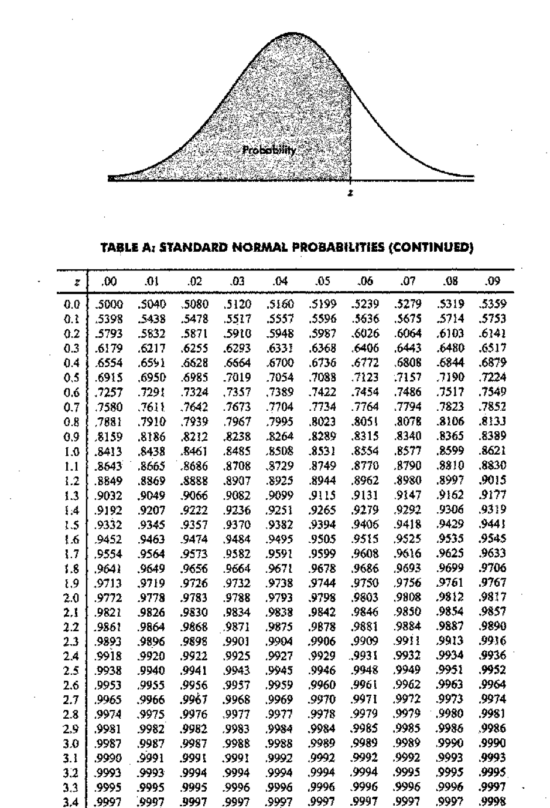
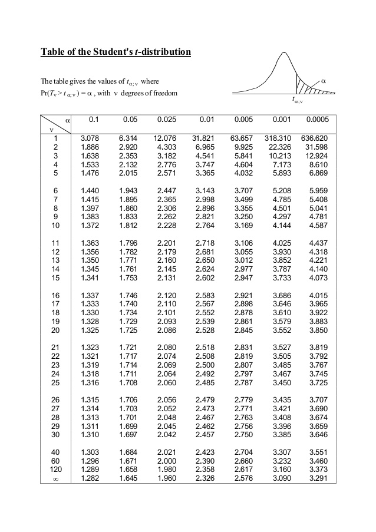
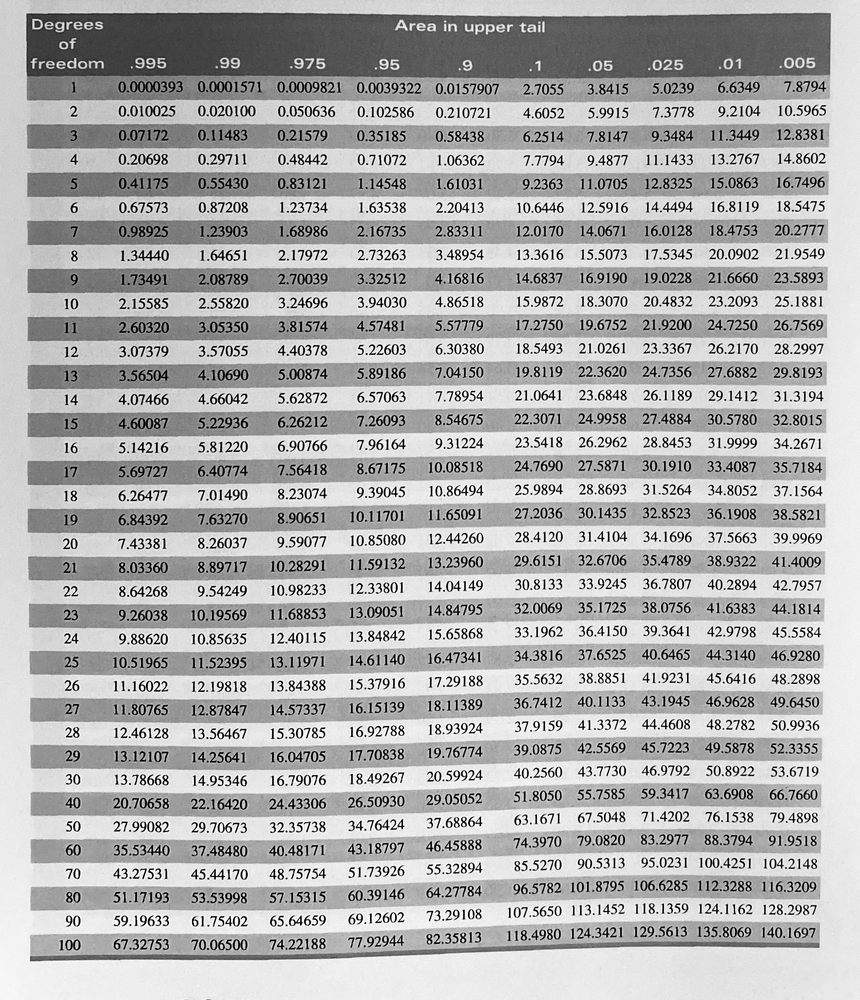

2 Interval Estimation
Under point estimation of a parameter \(\theta\), the inference is a guess of a single value as the value of \(\theta\).
Instead of making the inference of estimating the true value of the parameter to be a point, under interval estimation we make the inference of estimating that the true value of the parameter is contained in some interval.
2.1 What is gained by using an Interval Estimator?
Example
For a sample \(X_1, X_2, X_3, X_4\) from a \(N(\mu, 1),\) an interval estimator of \(\mu\) is \([\bar{X}-1, \bar{X}+1].\)
This means that we will assert that \(\mu\) is in this interval.
In the previous section (Point estimation) we estimated \(\mu\) with \(\bar{X}.\)
But now we have the less precise estimator \([\bar{X}-1, \bar{X}+1]\).
Under interval estimation, by giving up some precision in our estimate (or assertion about \(\mu\)), we try to gain some confidence , or assurance that our assertion is correct.
Explanation
When we estimate \(\mu\) by \(\bar{X},\) the probability that the estimator exactly equaled the value of the parameter being estimated is zero (Why? the probability that a continuous random variable equals any value is 0), i.e. \(P(\bar{X}=\mu) = 0.\)
However, with an interval estimator, we have a positive probability of being correct.
The probability that \(\mu\) is covered by the interval \([\bar{X}-1, \bar{X}+1]\) can be calculated as \[P(\mu \in [\bar{X}-1, \bar{X}+1])= P(\bar{X}-1 \leq \mu\leq \bar{X}+1)\] \[ = P(-1 \leq \bar{X} - \mu\leq 1)\] \[ = P(- 2\leq \frac{\bar{X} - \mu}{\sqrt{1/4}}\leq 2)\] \[ = P(- 2\leq Z\leq 2)\;\;\; \left(\frac{\bar{X} - \mu}{\sqrt{1/4}} \text{ is standard normal }\right)\] \[=0.9544.\]
Therefore now we have over 95% chance of covering the unknown parameter with the interval estimator.
By moving for a point to an interval we have scarified some precision in our estimate. But it has resulted in increased confidence that our assertion is correct.
The purpose of using an interval estimator rather than a point estimator is to have some guarantee of capturing the parameter of interest.
2.2 Definition of confidence interval
Definition
Let \(X_1, X_2, \dots, X_n\) be a random sample from a distribution with parameter \(\theta.\) Let \(T_1 = g(X_1, X_2, \dots, X_n),\) and \(T_2 = h(X_1, X_2, \dots, X_n)\) be two statistics satisfying \(T_1 \leq T_2\) for which \(P(T_1 < \theta < T_2)= \gamma,\) where \(\gamma\) does not depend on \(\theta\). Then, the random interval \((T_1, T_2)\) is called a \(100\gamma\) percent confidence interval for \(\theta\); \(\gamma\) is called the confidence coefficient; and \(T_1\) \(T_2\) are called the lower and upper confidence limits, respectively, for \(\theta.\)
Suppose that \(x_1, x_2, \dots, x_n\) is a realization of \(X_1, X_2, \dots, X_n\) and let \(t_1 = g(x_1, x_2, \dots, x_n),\) and \(t_2 = h(x_1, x_2, \dots, x_n)\). Then the numerical interval \((t_1, t_2)\) is also called a \(100\gamma\) percent confidence interval for \(\theta\).
2.3 Interpretation of confidence intervals
Consider the probability statement \(P(\bar{X}-1.18 \leq \mu\leq \bar{X}+1.18) =0.95.\)
The above probability statement implies that the random interval \((\bar{X}-1.18, \bar{X}+1.18)\) includes the unknown true mean \(\mu\) with probability 0.95.
2.4 Methods of finding interval estimators
2.4.1 Pivotal Quantity Method
Definition: Pivotal Quantity
Let \(X_1, X_2,\dots, X_n\) be a random sample from the density \(f(.;\theta).\) Let \(Q=q(X_1, X_2,\dots, X_n; \theta)\); that is, let \(Q\) be a function of \(X_1, X_2,\dots, X_n\) and \(\theta\). If \(Q\) has a distribution that does not depend on \(\theta\), then \(Q\) is defined to be a pivotal quantity
Pivotal Quantity method
If \(Q=q(X_1, X_2,\dots, X_n; \theta)\) is a pivotal quantity and has a probability density function, then for any fixed \(0<\gamma<1\) there will exist \(q_1\) and \(q_2\) depending on \(\gamma\) such that \(P[q_1<Q<q_2]=\gamma.\) Now, if for each possible sample value \((x_1, x_2, \dots, x_n),\) \(q_1< q(x_1, x_2,\dots, x_n; \theta)< q_2\) if and only if \(t_1(x_1, x_2,\dots, x_n)<\tau(\theta)<t_2(x_1, x_2,\dots, x_n)\) for functions \(t_1\) and \(t_2\) (not depending on \(\theta\)), then \((T_1, T_2)\) is a \(100\gamma\) percent confidence interval for \(\tau(\theta),\) where \(T_1=t_1(X_1, X_2,\dots, X_n)\) and \(T_2=t_2(X_1, X_2,\dots, X_n)\).
2.5 Methods of evaluating interval estimators
- Coverage probability
- Size (expected length)
Chapter 2: Tutorial
- Let \(X_1, X_2, \dots, X_25\) be a random sample from a \(N(\mu,9).\) Find a 95% confidence interval for \(\mu\).
- Let \(X_1, X_2, \dots, X_n\) be a random sample from a \(N(\mu,\sigma^2),\) both \(\mu\) and \(\sigma\) are unknown. Construct a \(100(1-\alpha)\%\) \((0<\alpha<1)\) confidence interval for \(\mu\).
- Let \(X_1, X_2, \dots, X_n\) be a random sample from a \(N(\mu,\sigma^2),.\) Construct a \(100(1-\alpha)\%\) \((0<\alpha<1)\) confidence interval for \(\sigma^2\).
- A random sample of 144 with a mean of 100 and standard deviation of 60 is taken from a population of 1000. Construct a \(95\%\) confidence interval for the unknown population mean.
- A manager wishes to estimate the mean number of minutes that workers take to complete a particular manufacturing process with \(\pm 3\) min and with \(90\%\) confidence. From past experience, the manager knows that the standard deviation \(\sigma\) is 15 min. What is the minimum required sample size (\(n>30\)) for this estimation.
- A state Education department finds that in a random sample of 100 persons who attended college, 40 received a college degree. find the 99% confidence interval for the proportion of college graduates out of all the persons who attended college.
- A random sample of 25 with a mean of 80 and a standard deviation of 30 is taken from a population of 1000 that is normally distributed.
Find \(90\%\) confidence interval for the unknown population mean.
Find \(95\%\) confidence interval for the unknown population mean.
Find \(99\%\) confidence interval for the unknown population mean.
what does the difference in the results to parts a), b), and c) indicate?
Cumulative Standard Normal Distribution Table
Student’s t distribution Table

Chi-Square Distribution Table

2.6 Summary
| Condition | Sample size | Target Parameter | Test Statistic |
|---|---|---|---|
| Population is Normal, \(\sigma\) known | Large or Small | \(\mu\) | \(\frac{\bar{X} - \mu}{\sigma/\sqrt{n}} \sim N(0,1)\) |
| Population is Normal, \(\sigma\) unknown | Small | \(\mu\) | \(\frac{\bar{X} - \mu}{S/\sqrt{n}} \sim t_{n-1}\) |
| Population is Normal, \(\sigma\) unknown | Large | \(\mu\) | \(\frac{\bar{X} - \mu}{S/\sqrt{n}} \sim t_{n-1}\) or \(\frac{\bar{X} - \mu}{S/\sqrt{n}} \sim N(0,1)\) |
| Population is Unknown, \(\sigma\) known | Sample size is large (\(n\geq 30\)) | \(\mu\) | Central Limit Theorem \(\frac{\bar{X} - \mu}{\sigma/\sqrt{n}} \sim N(0,1)\) |
| Population is Unknown, \(\sigma\) unknown | Sample size is large (\(n\geq 30\)) | \(\mu\) | \(\frac{\bar{X} - \mu}{S/\sqrt{n}} \sim t_{n-1}\) or \(\frac{\bar{X} - \mu}{S/\sqrt{n}} \sim N(0,1)\) (Since \(n\) is large there is a little difference between these values) |
| Population is Binomial | Sample size is large \(np \geq 5\) and \(n(1-p) \geq 5\) | \(\theta\) | \(\frac{p - \theta}{\sqrt{\frac{p(1-p)}{n}}} \sim N(0,1)\) |
| Population is Normal | Large or Small | \(\sigma^2\) | \(\frac{(n-1)S^2}{\sigma^2} \sim \chi^2_{n-1}\) |